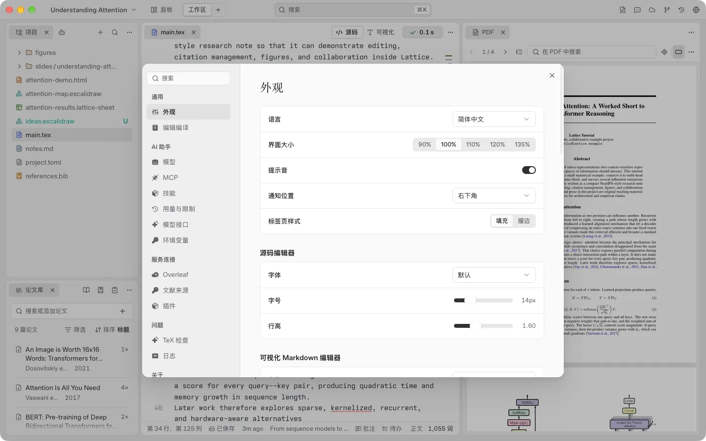
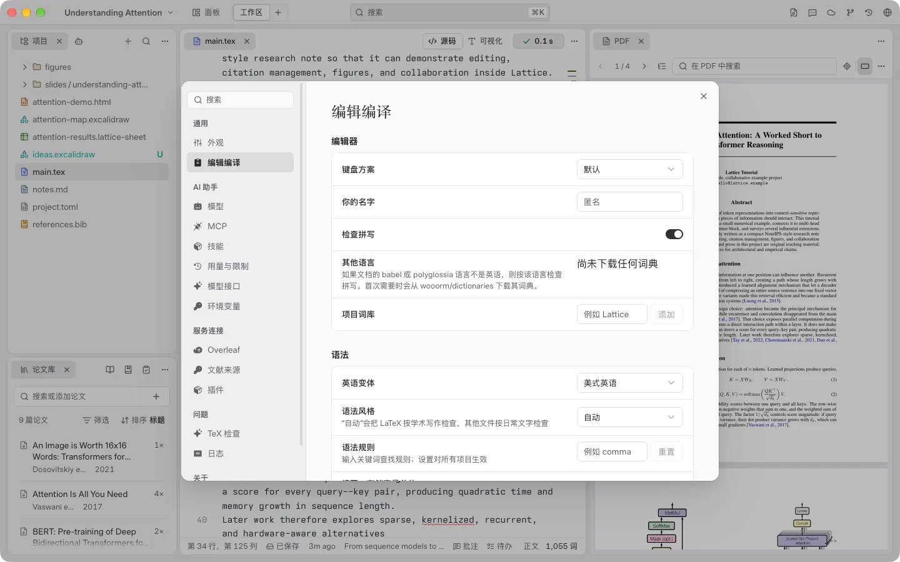
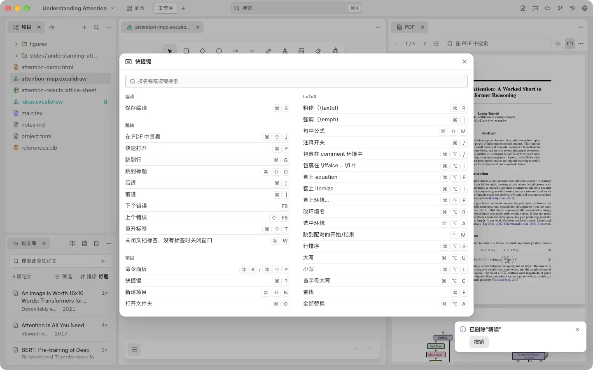

设置与快捷键
设置
打开 Lattice › 设置…（⌘,）。顶部的搜索框可以按名称找到任何设置。

| 分组 | 内容 |
|---|---|
| 外观 | 界面语言（English 或简体中文）、界面大小、声音、通知位置、标签样式、编辑器字体、主题和代码主题、标题栏工具。 |
| 编辑编译 | 键盘方案（默认、Vim 或 Emacs）、你的名字、拼写和语法检查（Apple 芯片 Mac 上只检查拼写，使用 macOS 的检查器）、自动编译、中间文件、编译引擎、shell escape、更新。 |
| AI 助手 | 模型、MCP、技能、用量与限制、已归档的对话、模型接口、环境。见 AI 助手。 |
| 服务连接 | Overleaf、文献来源（文献检索用的密钥）、插件。 |
| 问题 | TeX 检查、日志。 |

⌘+、⌘− 和 ⌘0（或 视图 › 放大 / 缩小 / 实际大小）临时调整界面大小。
快捷键
按 ⌘?（⌘⇧/）打开 快捷键，查看完整列表，可以按名称或按键筛选。列表跟随当前可用的命令，因此总是最新的。值得先记住的几个：
| 按键 | 作用 |
|---|---|
⌘K |
命令面板：按名称找到任何命令 |
⌘S |
保存并编译 |
⌘P |
快速打开文件 |
⌘⇧K / ⌘⇧L |
插入引用 / 引用编号 |
⌘⇧J |
在 PDF 中查看 |
F8 / ⇧F8 |
下一个 / 上一个编译问题 |
⌘⇧F |
在项目中查找 |
⌘⌥1、⌘⌥2、⌘⌥3 |
项目、论文库、AI 助手面板 |
⌘1 … ⌘9 |
切换工作区 |
⌘⇧D |
专注 |
⌘W / ⌘⇧T |
关闭标签 / 重新打开 |

想在编辑器里用 Vim 或 Emacs 按键，在 设置 › 编辑编译 › 键盘方案 中设置。